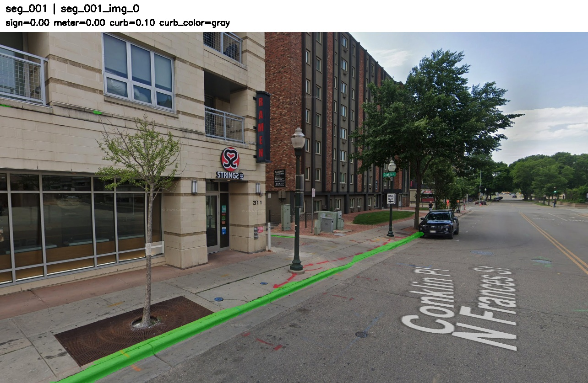
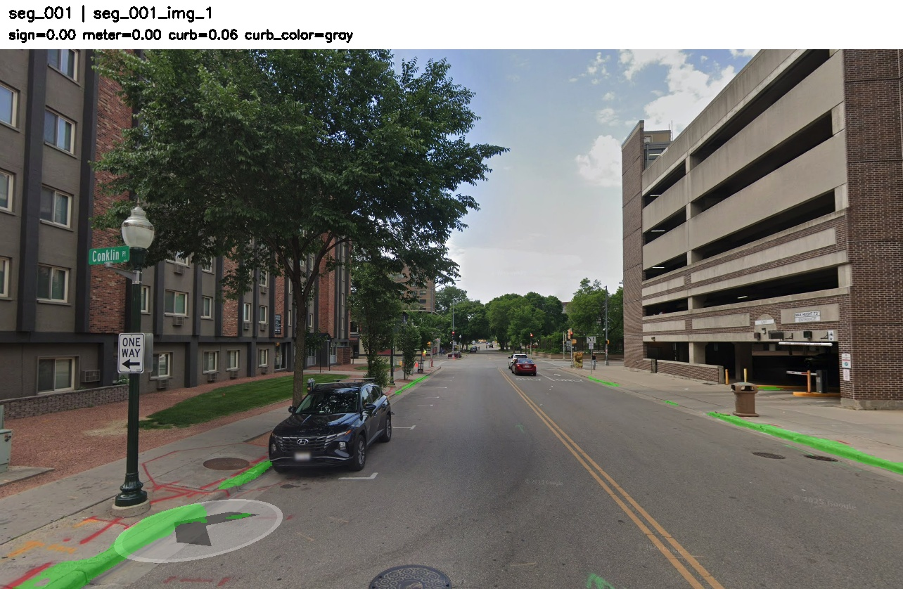
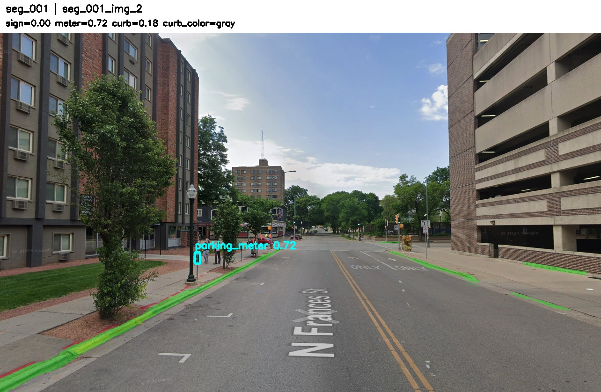
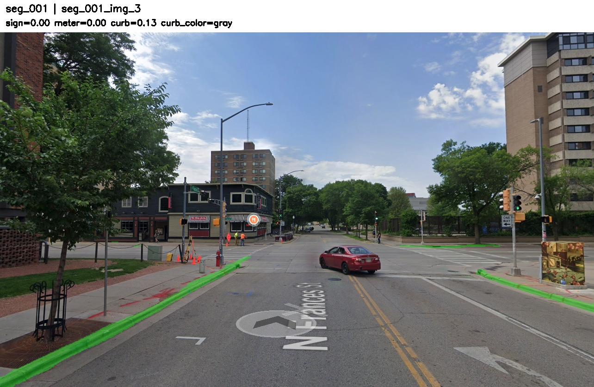
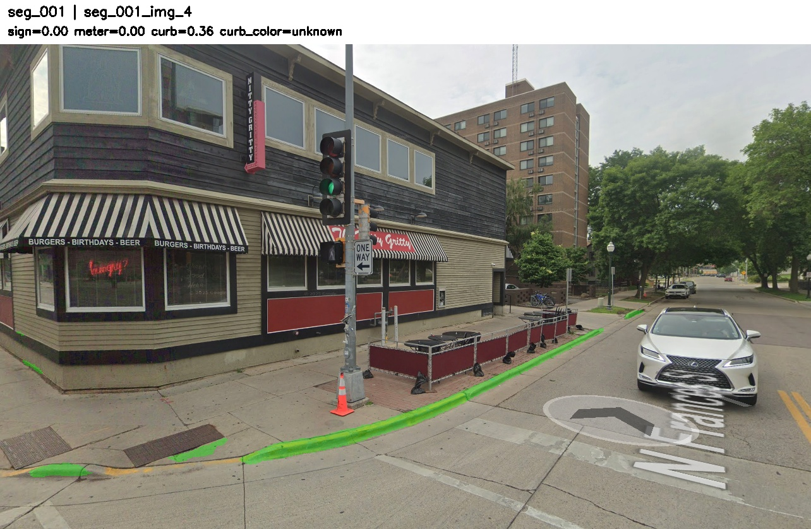

Overview
A short tour of what the project is, what we built, and what we found.
This project studies street parking presence inference from street-level imagery. The core idea is to detect image-level parking-related cues such as parking signs, parking meters, and curb-related evidence, and then aggregate these cues across nearby views to infer whether a street segment supports on-street parking. The framing is motivated by a practical reality of the task: parking cues are often small, sparse, occluded, and viewpoint-dependent, so single-image predictions are brittle — a negative result from one image may simply mean the relevant cue is outside the field of view or too small to detect reliably.
We focus on three visual cues:
- Parking signs, modeled as supervised object detection on the Mapillary Traffic Sign Dataset (MTSD).
- Parking meters, evaluated in a zero-shot cross-dataset setting using a COCO-pretrained detector on Mapillary Vistas.
- Curb structure and curb color, modeled through binary curb segmentation followed by a heuristic HSV color analysis.
Among these, the parking-sign detector emerges as the strongest explicit cue. Parking meters provide some transferable signal but are noisy. Curb color is visually meaningful in some cases, but it is sparse and difficult to recover robustly — especially when segmentation masks are thin or contaminated by nearby road markings.
The final project result is not just a set of independent detectors. The detectors are used as image-level components inside a segment-level aggregation system. This is important because the true downstream task is closer to "does this local street segment contain parking-related evidence?" rather than "does this single image contain a visible sign?". The aggregation experiments show that pooling evidence across multiple views substantially improves recall compared with single-image inference, while retaining useful precision.
The overall result is a multi-cue system in which:
- parking signs provide the strongest explicit parking evidence,
- parking meters provide a weak but non-random auxiliary signal,
- curb segmentation is feasible,
- curb color is possible to estimate conservatively, but should be treated as a sparse auxiliary cue rather than a primary standalone signal,
- segment-level aggregation substantially improves recovery of parking-related evidence when cues are sparse or only visible from some viewpoints.
Headline Results
Highlights from the final validation experiments. See Results for the full picture.
Main takeaway. Aggregating evidence across multiple nearby views lifts segment-level F1 from 0.319 (single-image baseline) to 0.830. Recall jumps from 0.200 to 0.924 with only a small precision drop, directly addressing the dominant failure mode of single-image inference: missing evidence due to viewpoint and sparsity.
Explore the project
The site mirrors the structure of the final report, with extra tabs for the proposal, midterm report, and source code.
Motivation
Why street parking inference matters, what makes it hard, and where prior work falls short. Pulled from the project proposal and report introduction.
Read the motivation →Approach
Datasets, label mapping, the YOLOv8 sign detector, zero-shot meter detection, curb U-Net segmentation, and the segment-level aggregation rule.
See the approach →Results
Quantitative tables, threshold sweeps, training curves, qualitative wins and failures, and the segment-level aggregation experiments.
View the results →Challenges
Practical challenges (storage, infrastructure, scale) and known limitations of the aggregation evaluation. Wrap-up and future work live on the Conclusion page.
Read the challenges →Documents
Full PDFs of the project proposal, midterm report, and final report — viewable in-browser and downloadable.
Open documents →Code & Data
Source code, training scripts, and dataset preparation notebooks. Hosted on GitHub for reproducibility.
Get the code →A glimpse of the system
A real-world segment where the parking-sign detector contributes nothing, but the auxiliary cues correctly recover the segment as positive.





Manual segment seg_001 (meter-only). The sign detector produces no signal. The parking-meter cue fires across multiple views, and after weighted aggregation the segment crosses the decision threshold — a case the sign-only baseline misses entirely. Click any view to step through the segment in a slideshow.
Note on writing assistance. This report and website were prepared with assistance from Claude/ChatGPT for drafting, restructuring, and language refinement. All content, results, experimental details, and observations were produced and verified by the authors.